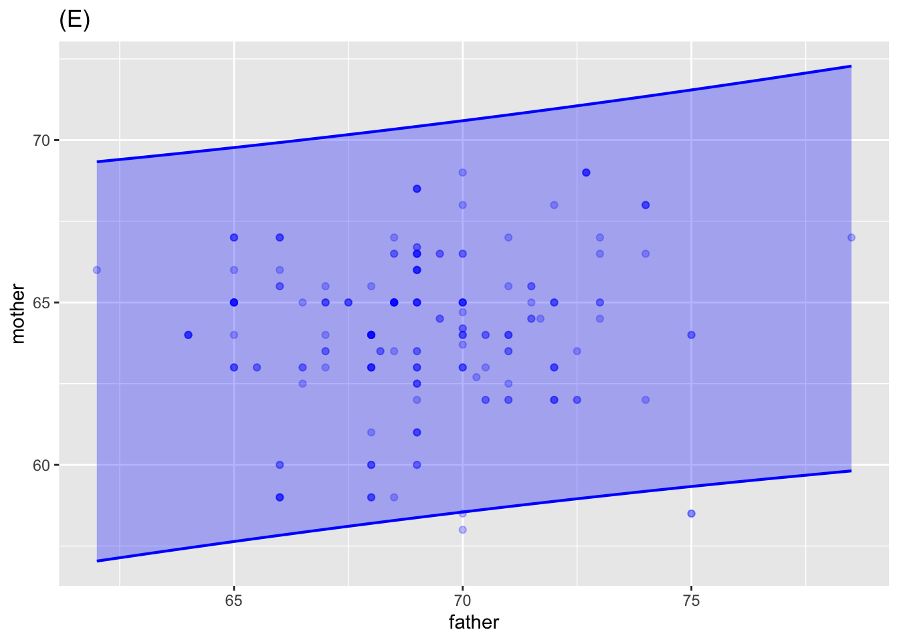
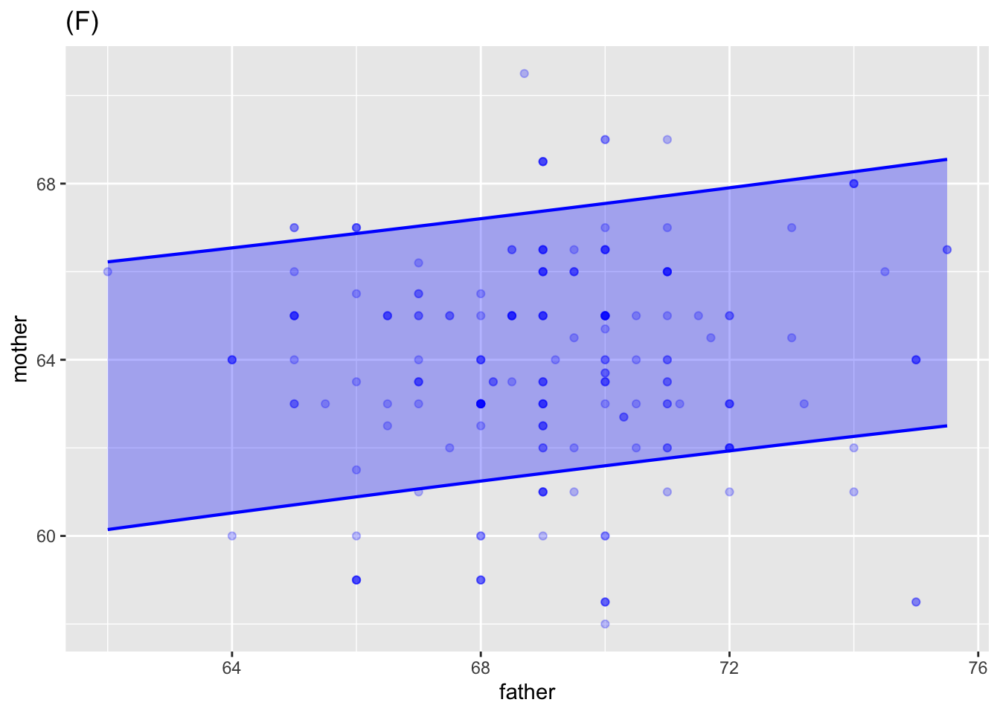

Lesson 25: Worksheet
We are using two different kinds of “intervals” for very different kinds of purposes:
Confidence intervals are used to represent the precision of our estimates of coefficients. This always involves averaging over multiple data points.
Prediction intervals are used to indicate the range of likely values of the response variable when specifying the explanatory variables.
Almost always, such intervals are constructed at the “95% level.” Because of this we don’t always mention the level. But other “levels” can be used: 80%, 90%, 99%, and so on.
It’s hard to tell from a graph of a confidence interval (or band) what the confidence level is. On the other hand, it’s often straightforward to estimate the “level” for a prediction interval or band. For a 95% prediction level, for instance, about 5% of the data points will be outside the prediction interval, while for a 99% level only about 1% of the data points will be outside the prediction interval.
Here are graphs of some confidence bands and some prediction bands. For each graph, the sample size \(n\) is either 100 or 200. For each graph, say what the sample size is and whether it displays a prediction or a confidence band. If it’s a prediction band, estimate the prediction level.



A. These are prediction intervals. Notice that they cover most of the data. There are 200 points and about 40 are outside of the intervals, so the prediction level is (200-40)/200 = 80%.
B. A confidence band.
C. Same data as in (B), but the band covers almost all the data. There are about 200 points, of which about 20 are outside the band, so the prediction level is (200-20)/200 = 90%.
D. A confidence band.
E. A prediction band. There are about 200 points, with about 2 outside the band, so the prediction level is (200-2)/200 = 1%.
F. This is a tricky one. It looks like about 80% of the data are outside of the band, so if it’s a prediction band then the level is 80%. Could it be a confidence interval with a very high level (say, 99.99%)? Figure (D) shows the same data with a confidence band. Note the hour-glass shaped band. This is typical of a confidence band, but not of a prediction band.
G. Confidence intervals.
H. Prediction band. About 200 points altogether, of which about 20 are outside the band. (You need to look at the intensity of the dots to see the multiple data points being overplotted.) So a prediction level of about 90%.